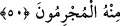
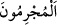

49. De ki: “Ben kendime dahi Allah’ın dilediğinden başka ne bir zarar ne de bir
yarar sağlama gücüne sahibim.” Her ümmetin takdir edilmiş bir eceli vardır.
Ecelleri gelince, ne bir an geri kalırlar, ne de ileri giderler.
“De ki: “Ben kendime dahi Allah’ın dilediğinden başka ne” kendimden
uzaklaştırmak sûretiyle “bir zarar ne de” kendime celb etmek sûretiyle “yarar
sağlama gücüne sahibim.” Şu halde azabın başınıza hemen gelmesini sağlama gücüne
nasıl sahip olurum?! Ama Allah’ın dilediği olur. Çünkü zarar verme ve fayda sağlama
gücüne sâhip yegane varlık Allah’tır. O tehdidi için bir zaman tayin edip sonra da
bundan caymaz. O vakit gelince, âyetin devamında da belirtildiği üzere yapılan tehdit
mutlaka gerçekleşir.
Kendileriyle peygamberleri arasında hükmolunan “her ümmetin” kendilerine has,
başka ümmetlere sirâyet etmeyen, peygamberlerini yalanladıkları için azâb edilmek
üzere konulmuş “takdir edilmiş” muayyen “bir eceli vardır. Ecelleri” yani kendilerine
has, muayyen zamanları “gelince” bu süreden “ne bir an” çok az bir zaman dilimi
kadar “geri kalırlar” bu eceli tehir edebilirler “ne de ileri giderler.” bu eceli öne
alabilirler. Şu halde acele etmeyin sizin vaktiniz de gelecek, size yapılan tehdit
gerçekleşecektir.
Belirlenen sürenin öne alınması, tehir edilmesi gibi bizzat mümkün olmakla birlikte
bunun olmayacağını beyan etmek için değil tehiri olmadığını mübalağa ile bildirmek
için zikredilmiştir. Çünkü bu aklen mümkün olmayan şeylerdendir.
50. De ki: “Söyleyin bana, O’nun azâbı size geceleyin ya da gündüzün gelirse!
Suçlular bundan hangisini acele ister?”
“De ki: söyleyin bana, O’nun” acele gelmesini istediğiniz “azâbı size, geceleyin”
yâni geceleme ve uyuma ile meşgul olduğunuz sırada “ya da gündüzün” yâni
maişetinizi sağlamaya çalışırken “gelirse! Suçlular bundan hangisini acele ister?”
Yani hangi çeşit azâbı acele istiyorlar. Çünkü şiddet ve zorluğundan dolayı hiçbir azap
acele istenmez. Bu insan tabiatına terstir. Ya da: “Yüce Allah’tan neyi acele olarak
istiyorlar?” Bir şeyin geldikten sonra acele istenmesi mümkün olmaz. Öyle ise bu
sözden maksad, azâbın acele istenmesini red ve inkarda mübâlağadır. Şöyle ki bu istek,
mümkün şeyler zümresinden çıkarılmıştır. Azâbın kesin olarak geleceği ve yaklaştığı
düşüncesi de gerçekten geldiği şeklinde değerlendirilmiş, azâbı acele istemenin
muhâlliği geldikten sonra hâlâ acele isteme derecesine indirilmiştir.
Zamir kullanılacak yerde “  (suçlular)” kelimesinin açık olarak kullanılması,
suçluların durumunun acele azap istemeye uygun olmadığını beyan ederek bu hususu red